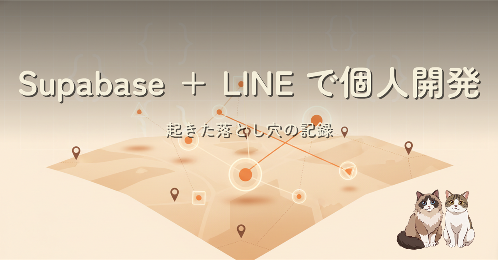
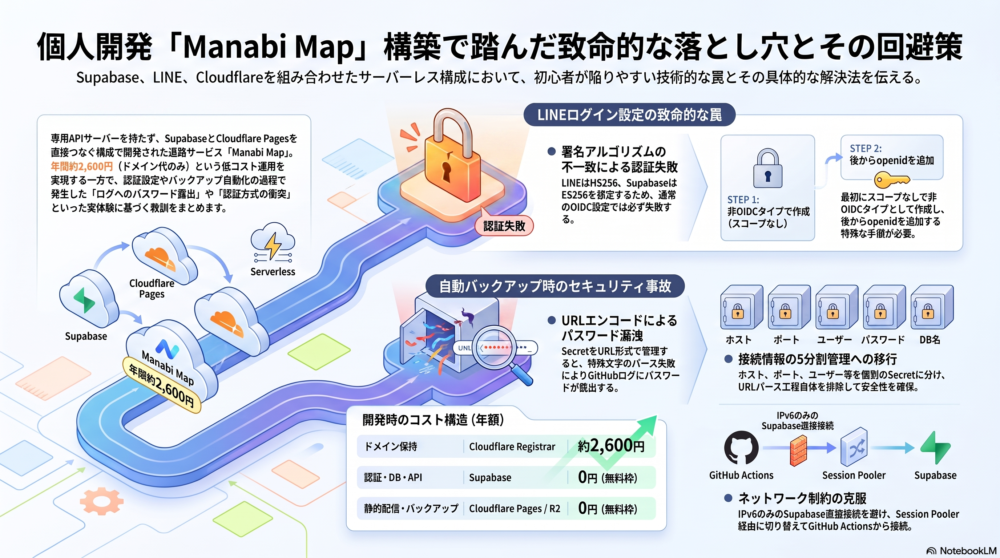
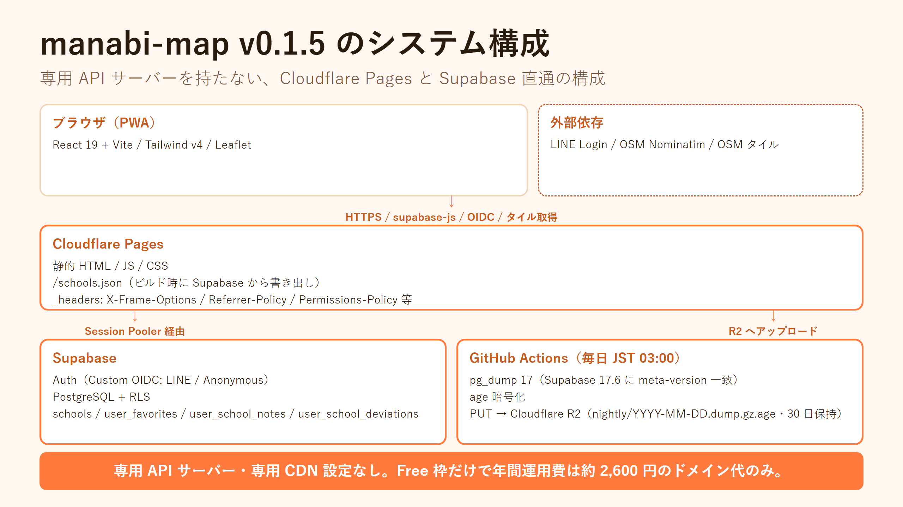
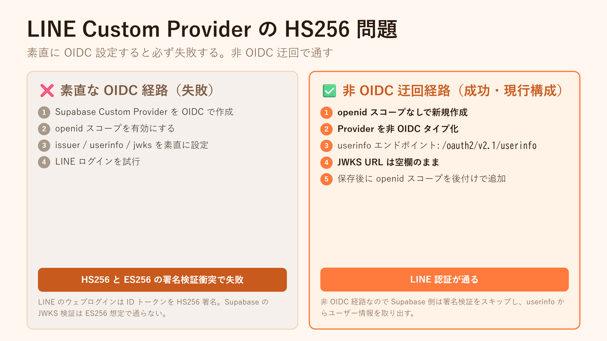

専用 API サーバーを持たず、Vite + React 19 + Tailwind v4 + Leaflet のフロントエンドから Supabase に直接つなぎ、Cloudflare Pages でホスティングした個人開発サービス Manabi Map。LINE ログインの HS256 問題、Supabase 無料枠を守るための schools 静的化、夜間バックアップ workflow でのパスワード断片ログ漏洩事故と split-secret 化での再発防止、Supabase Free の IPv6 only 問題までを記録しました。

サーバーレス構成そのものより、「事故が起きた後にどう構造を作り直したか」に重心を置いた記事です。LINE の Custom OIDC Provider は素直に作ると必ず失敗する設定順序があり、夜間バックアップの workflow では URL 形式の接続情報 1 本にまとめたことが原因でパスワードの断片が Public リポのログに出力される事故が起きました。原因を抑え込むのではなく、5 分割の Secret + PGPASSWORD 直渡しという「事故が構造的に起こり得ない形」へ書き換えた過程を中心に書いています。

